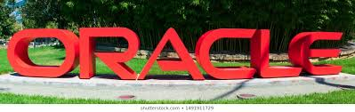

Eight Companies Owned by Oracle
TABLE OF CONTENTS
Acme Packet
BEA Systems
Hyperion Corporation
MICROS Systems
NetSuite
PeopleSoft
Siebel Systems
Sun Microsystems
The acquisition of Aconex, a construction software developer, by Oracle Corporation (NYSE: ORCL) during the winter of 2017 was just another example of Oracle’s reach in the technology market. Acquisitions like this have helped develop Oracle in a multitude of ways, including application development, industry solutions, middleware, server expansion, storage capabilities and network development. While the Aconex acquisition was valued at $1.2 billion,1 this does not represent Oracle’s most expensive purchase, that would be when Oracle bought PeopleSoft for $10.3 billion in 2005.2 They are often compared to Google.
On May 7, 2018, the company announced a series of autonomous services products, including Autonomous Analytics Cloud, which combines AI, machine learning and service automation to process information more efficiently.3
Due to the numerous products, services and industries Oracle caters to, it is no surprise that there are a substantial number of important subsidiaries and integrated companies that result in Oracle having the second-highest gross revenue across all software companies.
KEY TAKEAWAYS
Oracle is known as a global leader in enterprise software and IT solutions.
Its cloud computing and database packages are well-known throughout the industry, but the company also has relied on an aggressive acquisition strategy to bolster its portfolio.
Included under the Oracle banner are BEA Systems, Hyperion, Siebel Systems, and Sun Microsystems, among several others.
Acme Packet
Acme Packet produces session border controllers, security gateways and session-routing proxies. It allows secure and reliable communications across devices, regardless of network. Oracle entered into an agreement to acquire Acme Packet in 2013 for 2.1 billion.4 At the time of the acquisition, Acme Packet’s solutions were utilized by almost 90% of the world’s top 100 communications companies.5 Acme Packet was founded in 2000 and is headquartered out of Bedford, Massachusetts.6
BEA Systems
Oracle acquired BEA Systems in 2008 for $8.5 billion.78 The acquisition was made to bolster Oracle’s Fusion middleware software suite. Founded in 1995,9 the three founders were all former employees of Sun Microsystems. BEA Systems’ three major product lines were a transaction-orientated middleware platform called Tuxedo, an enterprise infrastructure platform and a service-orientated architecture platform. All three products are utilized today, including the development of the Oracle Weblogic Server and Oracle Service Bus.
Hyperion Corporation
Hyperion Corporation, a provider of performance management software, was acquired by Oracle in 2007 for $3.3 billion.10 It offers enterprise resource planning solutions, financial modules and reporting products. The combination of the two companies resulted in the creation of the Oracle Business Intelligence Enterprise Edition Plus.
MICROS Systems
In September 2014, Oracle completed the acquisition of MICROS Systems Inc. Previously headquartered in Maryland, MICROS provided enterprise applications to restaurants, hotels, casinos and other entertainment businesses. The $5.3 billion deal to acquire MICROS enabled Oracle to expand its Retail and Hospitality Hardware and Software division. At the time of acquisition, MICROS technologies were used by over 330,000 customers in 180 countries.11
NetSuite
Oracle’s 2016 acquisition of NetSuite expanded Oracle’s operations in cloud services.12
NetSuite was the first cloud company and was founded in 1998. NetSuite provides customers with a suite (get it?) of software services to manage business operations and customer relationships. NetSuite currently provides products to over 40,000 companies in 100 countries.13 NetSuite is one of the biggest acquisitions ever made by Oracle, costing the company $9.3 billion, and gave their library of software a huge boost.12
PeopleSoft
PeopleSoft provides numerous financial and business applications to address a range of business requirements. Oracle’s hostile takeover of PeopleSoft in 2005 cost $10.3 billion.2 Modules created by PeopleSoft include Human Capital Management, Financial Management, Supplier Relationship Management, Enterprise Service Automation, Supply Chain Management and PeopleTools.
Siebel Systems
Siebel Systems specializes in customer relationship management solutions. After paying $5.85 billion in 2005,14 Oracle acquired its main competitor in the sales automation program industry. Siebel’s customer relationship manager provides solutions to more than 20 industries and is integrated into Oracle’s Customer Experience portfolio. Founder Thomas Siebel was an Oracle executive from 1984 to 1990 before founding Siebel Systems in 1993.15 Siebel itself now operates as a product under the Oracle branding.
Sun Microsystems
Founded in 1982,16 Sun Microsystems was acquired by Oracle in 2010 for $7.4 billion and is utilized in the production of Oracle Optimized Systems.17 Sun Microsystems helped developed a high-performance infrastructure for the Oracle Database, as well as the first Oracle Exalogic Elastic Cloud. Sun Microsystems’ personal portfolio of software developments has expanded under Oracle with the releases of Oracle Solaris, MySQL and Java 7.
Copyright© 2020